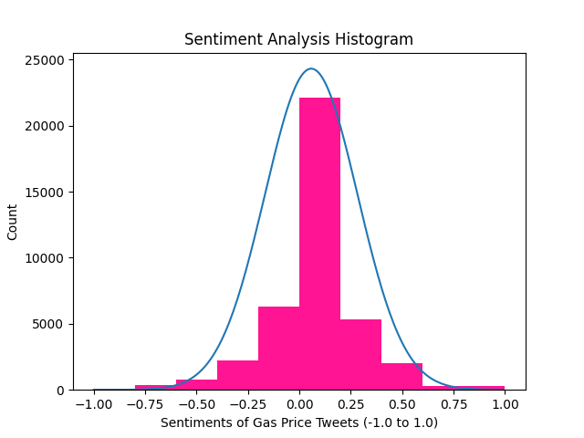

Home
About
Presentation
Close
Gasoline Price Dashboard
National Average Gas Prices
Regular
Mid-Grade
Premium
Diesel
Public Sentiment Analysis

Positive Twitter Posts
Neutral Twitter Posts
Negative Twitter Posts